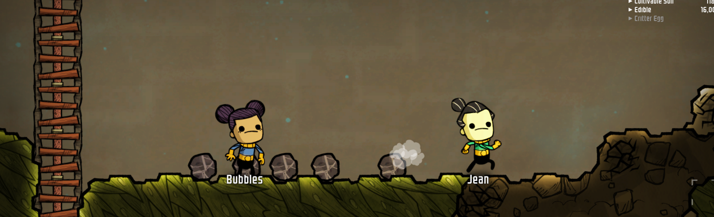
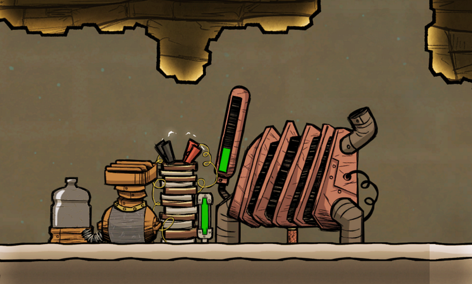
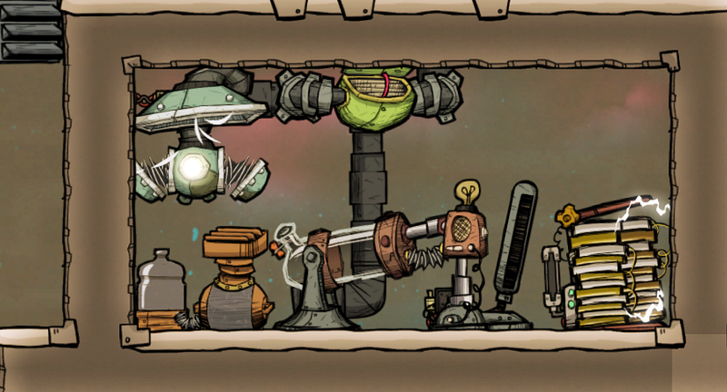
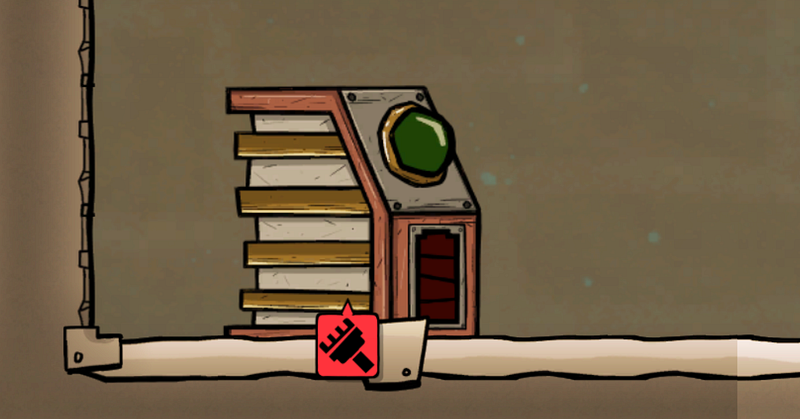
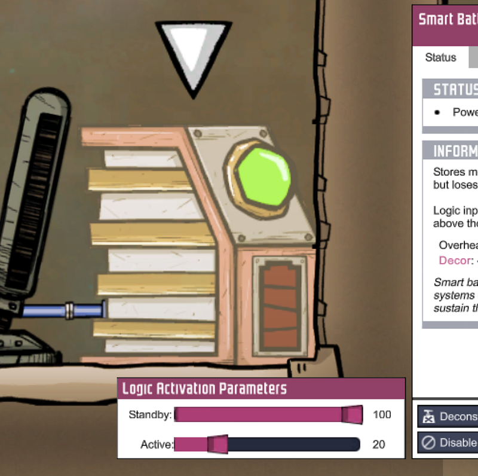
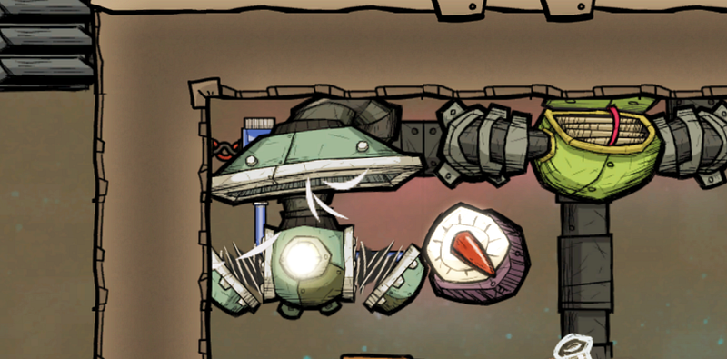
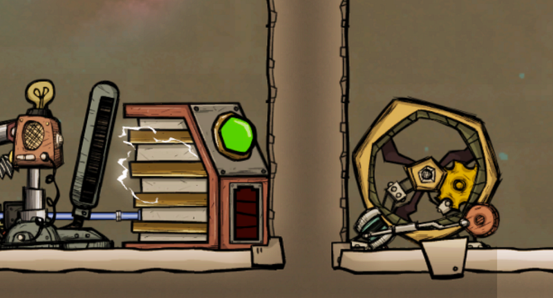
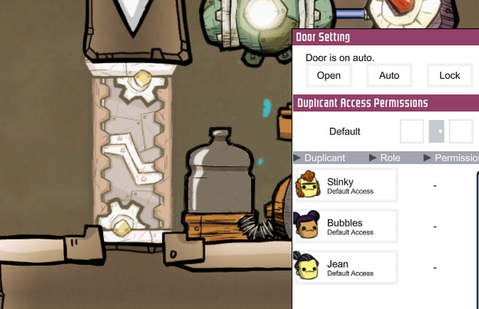
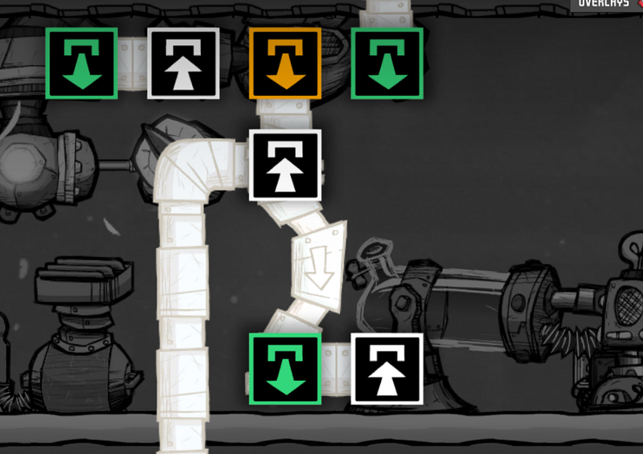
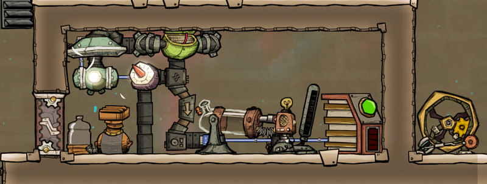

Oxygen Not Included 初心者向け、電解機と水素発電の酸素供給施設の考察（１）
Oxygen Not Included 初心者向け、電解機と水素発電の酸素供給施設の考察（１）

Oxygen Not Includedはこの電解機と水素発電による酸素供給施設が効率良く稼働するように工夫するところから、ようやく本当のゲームが始まると言っても過言ではないと思っている。
前回、前々回の序盤の解説の続きとして、ここから数回にわけて、電解機と水素発電を中心としてシステムの組み立て方について解説しながら、Oxygen Not Includedでの中盤以降重要になるシステムの組み方について考えていく。
酸素供給はゲーム序盤では超重要な要素なので、特に初心者のときにはつい適当に電解機を設置しがちだ。例えばこんなふうに…

しかしこれでは当たり前だが酸素はともかく電解機の副産物の水素が基地の上の方に溜まるだけだ。大きな害はないが、あとでこの水素を集めるのは意外と苦労するのでおススメできない。
じゃあどこかに水素を貯めればいいのかというとそうでもない。頑張って吸気ポンプとフィルターを作って水素タンク（ないし水素部屋）に水素を貯めたところで、タンクが満杯になったところで酸素供給のほうも止まってしまう（か、水素が溢れる）。
それにここまでのやり方では電解機と汲み上げポンプを動かすためのエネルギーを外部に頼らざるを得ない。これがゲーム序盤だと石炭発電しかないので、いくら石炭を掘っても足りない状況になる。
そうなってくると、やるべきことは一つしかない。酸素供給の為のエネルギーを、電解機から得られる水素を使って、そこから得る、ということだ。つまり、クローズドなシステムを作る。
シンプルなシステム
そこでまず最もシンプルな形のシステムを考えてみたい。さまざまな問題があるので、それの改良方法について解説して、その後シンプルな酸素供給施設その１、として改良したものをお見せする。
まず最初に以下のような形のシステムを考える。

閉じられた部屋で電解機から得られる水素と酸素を吸気ポンプで吸い込み、利用する。
水素発電機は水素以外の気体を流し込むと故障するので、吸気ポンプから得られる気体にはフィルターをかけて、そこから得られる純粋な水素を発電器に流す。
発電機から得られたエネルギーはバッテリーに蓄電する。
このシステムの消費電力は吸気ポンプ240W、エアフィルター120W、電解機120Wの合計480Wで、水素発電は800Wなので発電量が完全に消費電力を上回っており、元の目的であるクローズドなシステムとしてはの要件は満たしている。
しかしこのシステムには多々問題がある。ひとつずつ見ていく。
システムの問題点
過剰な発電
上記のシステムの場合、蓄電に使う装置がただのバッテリーでは、バッテリーが満タンになっていてもそれを発電機に伝える術がない。ということは、発電機は蓄電量にかかわらず、常に発電し続けてしまう。
これでは燃料の水素がどんどん消費されてしまいもったいない。
なのでここはスマートバッテリーを使うべきだろう。自動化ワイヤーでスマートバッテリーと発電機を繋げておけば、スマートバッテリーから発電機に充分蓄電できているかどうかのシグナルを送ることができる。

無事スマートバッテリーに換装できたのなら、一つ注意しておきたいのは、デフォルト状態ではスマートバッテリーから得られる自動化用のシグナルは、バッテリーの蓄電率が0%になってから初めて発せられるということだ。
それで問題ないと思ったあなたは、発電機を動かすには水素が必要で、その水素を作るにはまず電解機と吸気ポンプが動かないといけない、ということを思い出してほしい。つまり蓄電率が0%になってからまた発電を開始してもそもそも水素を発電機まで届けられないので手遅れになってしまうのだ。
なので、ここはスマートバッテリーの設定で蓄電率が20%とか50%とか、そのあたりのよき値になったらシグナルを送るという設定にしておくと良い

吸気ポンプの稼働条件
また、効率の面でもうひとつ考えておきたいのは吸気ポンプのほうだ。
吸気ポンプは電気の供給が続く限り、周りの気体を吸って送り続ける。通常はこれで問題はないのだが、もしなんらかの理由でこの部屋の中で気圧が下がった場合、ほとんど送り出す気体がないにも関わらず吸気ポンプは全力で吸気し、エネルギーを消費し続けることになる。
なので、ここでも気圧計などをかまして自動化するべきだろう。気圧計である一定の気圧になったら始めて吸気ポンプを動かす、という形だ。

初回起動時の電気
次にこのシステム全体を最初に動かす時のことを考える。一番最初にはこのシステム内に蓄電されている電気は存在しない。
ということは、まず最初に水素発電機を動かすのに充分な水素を作るための電気を作る必要がある。
色々やり方はあるのだが、このようなシンプルなシステムを作るとしたらゲーム序盤だろうから、本記事では人力発電機で賄うということでよいだろう。

ここでポイントなのは、Duplicantが直接操作する必要がある人力発電機は、密閉された部屋の外に出しておく、ということだ。こうしておけば、わざわざ部屋の中の水素を外部に漏らす危険を伴わずに電力を供給できる。
部屋の非常出入り口
前項に密閉された部屋と書いたが、厳密に言えばどこかのタイミングで部屋内部にある施設もメンテナンスをする必要がでてくる可能性が高い。
その時に壁を壊してもいいのだが、どうせなら最初から出入り口を作っておくのが良いと思う。なので最初に設置するタイミングで手動エアーロックを設置するとよいだろう。
ただ、普通にドアを作って終わりにするとDuplicant達が好き勝手に部屋に出入りしてしまう。
これを避けるためにはドアを通れるDuplicantを選択できる設定を使い、「誰も通れない」形にしておく。これで実質上、そこにドアがあるのに通行止め、という形にできる。

余剰水素の処理
実はスマートバッテリーで水素発電を制御するとひとつだけ弊害が出てくる。余分な水素を使わなくなる結果、水素が溜まっていくのだ。
溜まるのも、部屋内部で溜まるならまだギリギリ良いかも知れないが、問題は排気管の中が詰まってしまうことだ。フィルターが水素を発電機側のパイプに送ろうとしても、遊びがないので詰まってしまうのだ。
こうなると、フィルターが全く動かなくなるので、折角作った酸素が基地内に提供できなくなってしまう。
これは余剰分の水素をどこかに貯蔵ないし、別系統の発電設備に回すとよい。だが、この記事はクローズドなシステムについての記事なので、ここではこれ以上の詳細は省くことにする。
ただ、ここで配管についてひとつだけ重要なことを覚えておいてほしい。

配管を二手に分けた場合、通常の管では内容物が均等に2分の1ずつ分かれて送られていく。でもこのシステムではまず最初にシステム内の水素発電機に水素が送られて欲しい。排気したいのはあくまで水素発電側に充分水素がある時だけだ。
このように片方の管を優先したい場合は、優先したい側を気体用ブリッジでつなぎ、反対側を通常のパイプでつなぐ。こうすると、ブリッジ側が詰まった時のみ、反対側に排気される。
これは液体用のパイプでも同じなので、ぜひ覚えておきたい。
改良版発電システム
以上を考慮した設計をすると以下のようになる。

これはあくまで解説用にざっくり作ったシステムなのでレイアウトが悪いのは勘弁してほしい。この次の記事ではこれをさらに改良していく過程を説明する。